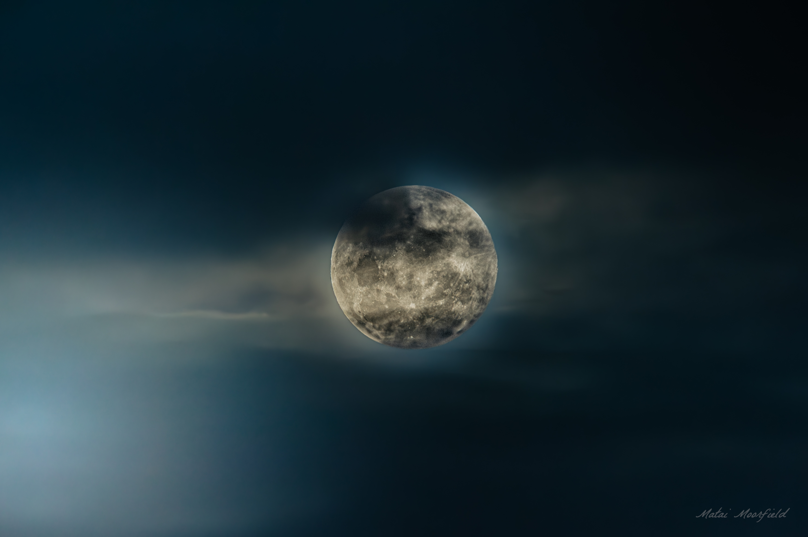
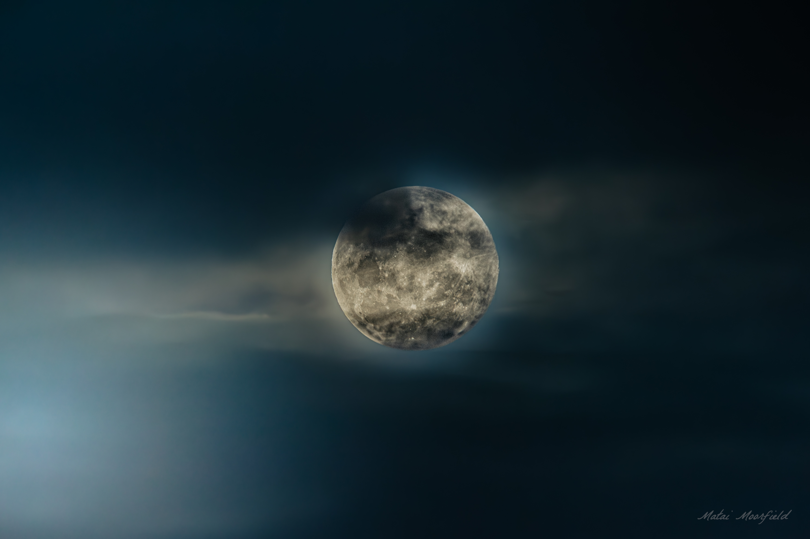

Full Gallery
Waders
 gracefully wading through water, possibly at sunrise, searching for fish. This critically endangered native bird is a beautiful sight in its natural wetland habitat.")
 captured mid-stride in shallow water, its elegant form reflected on the surface. This rare native wader is a symbol of natural beauty in New Zealand.")
 standing calmly in its wetland environment, showcasing its pristine white plumage. These native herons are incredibly shy and often seen in their solitary pursuit of food.")
 intently focused on the water, poised to catch its next meal at sunrise. This beautiful image highlights the bird's solitary hunting style.")
 with its long neck extended, patiently observing the water for fish in the soft light of dawn. Their pristine white feathers stand out against the wetland backdrop.")
 captured mid-action, perhaps stepping through the shallows or about to strike at prey, bathed in the warm glow of sunrise.")
 gracefully foraging in reeds, its long legs and keen eyes seeking out food in the shallow waters of a New Zealand wetland.")
 peering through the dense foliage of reeds, its sharp beak ready to snatch an unsuspecting fish or insect in its wetland habitat.")
Frogs/Reptiles
 resting on a flax leaf, its distinctive emerald green and golden-brown markings contrasting against a dark, moody background, captured in a fine art style.")
 perched delicately on a flax leaf, highlighting its intricate skin patterns and striking colours, presented as a fine art wildlife photograph.")
 on a flax leaf, with a shallow depth of field drawing attention to its expressive eyes and vibrant skin, set against a dark, artistic backdrop.")
 resting on a flax leaf, its distinctive emerald green and golden-brown markings contrasting against a dark, moody background, captured in a fine art style.")
 perched delicately on a flax leaf, highlighting its intricate skin patterns and striking colours, presented as a fine art wildlife photograph.")
Shorebirds
 gracefully flying past a rocky island in New Zealand, showcasing their agile flight and streamlined bodies against the open sky.")
 in mid-flight over the New Zealand coastline, their wings extended and tails forked, demonstrating their mastery of aerial maneuvers above the ocean.")
 in graceful flight, its distinct white forehead and black cap visible as it soars effortlessly through the coastal air of New Zealand.")
 captured mid-bath, water droplets flying as it shakes its feathers, enjoying the morning light by the shore.")
, possibly a juvenile, preening its feathers after a refreshing bath, with the golden hues of sunrise painting the background of its coastal habitat.")
 captured in a raw moment, feeding on a dead rabbit by the shore. This opportunistic scavenger plays an important role in coastal ecosystems.")
 in flight, its streamlined body and impressive wingspan visible as it soars over the ocean, showcasing its incredible aerial prowess.")
 seen from a different angle, continuing to feed on its prey, highlighting its dark plumage and robust build typical of this large New Zealand gull species.")
 engaged in a territorial dispute or display on a weathered branch, captured in a dramatic black and white fine art style that emphasizes their dynamic forms and interaction.")
 with its large pouch and impressive wingspan. While not native to New Zealand, they are occasional visitors.")
 standing on the sand, its camouflaged plumage blending with the coastal environment. This endangered native shorebird is often difficult to spot.")
 perched regally on a branch, its dark plumage contrasting with its white chest. This common New Zealand coastal bird is often seen drying its wings.")
 navigating a clear, rushing river, showcasing its unique blue-grey plumage and strong legs adapted for fast-flowing water.")
 poised on a rock in a pristine river, its distinctive bill and striking blue colour making it a highly recognizable and cherished native bird.")
 camouflaged against the sandy beach, its delicate features and watchful eyes scanning for prey. This endangered bird is a testament to New Zealand's unique coastal wildlife.")
 camouflaged against the sandy beach, its delicate features and watchful eyes scanning for prey. This endangered bird is a testament to New Zealand's unique coastal wildlife.")
 perched majestically on a gnarled, bare branch, presented as a black and white fine art photograph that highlights its silhouette and the textures of its environment.")
Forest birds
 perched on a branch, its iridescent green and blue feathers gleaming in the light, with its distinctive white throat tuft visible.")
 captured as it takes nectar from a flower, its beautiful plumage and energetic posture characteristic of this native honeyeater.")


 perched on a branch, its plump body and distinctive white chest making it a prominent sight in New Zealand's native forests.")
 in the act of taking flight from a cabbage tree, its large wings spread, showcasing its vibrant iridescent plumage.")
 perched on a branch, its plump body and distinctive white chest making it a prominent sight in New Zealand's native forests.")
 captured mid-flight, its powerful wings propelling it through the air, highlighting its importance as a seed disperser in the New Zealand ecosystem.")
 foraging on the ground, their distinctive head plumes and mottled brown plumage providing excellent camouflage in their habitat.")
, also known as Waxeye (Tauhou), perched on a branch, its distinctive white eye-ring clearly visible against its olive-green feathers.")
Fine Art
 in mid-swoop, hunting over a landscape, its wings spread wide, showcasing its predatory grace and mastery of flight.")
, highlighting its striking black plumage and bright orange bill, standing on the New Zealand coastline.")
 perched elegantly on a weathered branch, its posture and the natural textures of its environment creating a harmonious composition.")
 interacting on a rugged, dead branch, their forms creating a powerful visual narrative against a soft background.")
Abstract & Landscape

 silhouetted against the soft glow of the first light of morning, their rapid flight streaks creating artistic patterns.")
 flying gracefully in front of a large, luminous moon, creating a silhouette against the celestial body.")
 taking flight from a tree, silhouetted against the dramatic backdrop of a large, rising moon, creating a sense of wonder.") 



© 2025 Matai Moorfield. All rights reserved.
All photographs on this website are protected by copyright and are the property of Matai Moorfield. Unauthorised use, reproduction, or distribution of these images is strictly prohibited. For inquiries regarding licensing, please contact matai@moorfield.co.nz